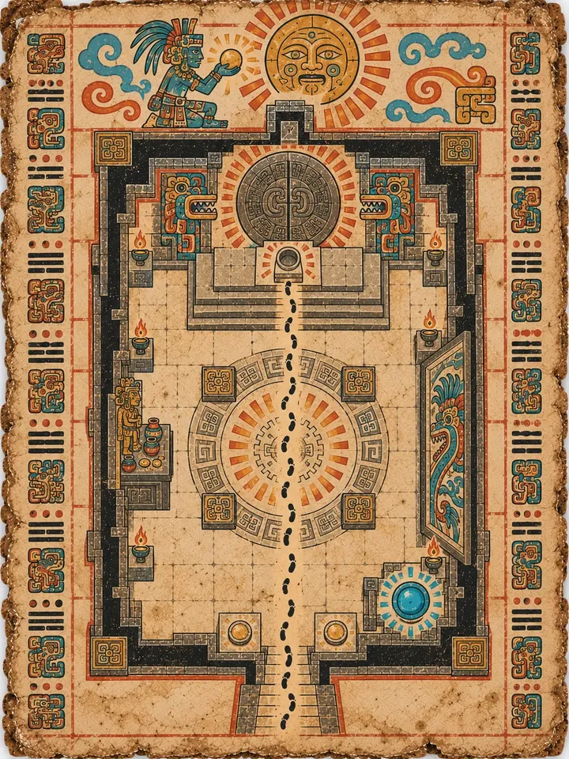
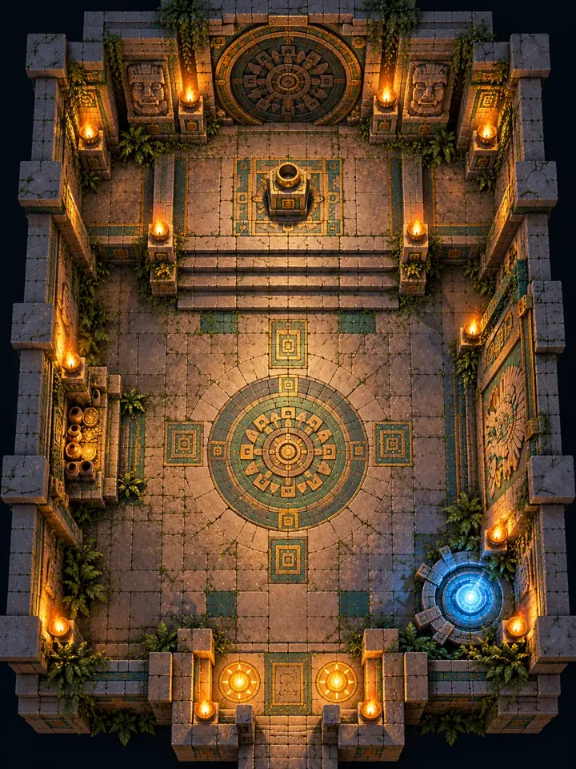

PC
Die Portalkammer
Jede Ebene endet hier. Die Gruppe kommt an und hört K'ins Satz am Fragment des Wandbilds, bringt Münzen in Sicherheit oder kauft am kleinen Opferschrein eine Heilung, steigt das dreistufige Podest hinauf, setzt die Schlüsselkugel in die Schale aus gemeißelten Händen und geht durch die große runde Portaltür.
Ein kleines blaues Rückkehrportal führt mit gespeichertem Fortschritt zurück zur Schwelle. Ein gemeinsamer Raum ersetzt siebzehn einzelne Portalräume.



